งานอื่นๆ
Doctor Content Partnership
สร้างความน่าเชื่อถือให้แพทย์เฉพาะทางผ่านคอนเทนต์ให้ความรู้
Agnos Health · Healthcare Content Marketing · Doctor Partnership

หนึ่งในคลิปสัมภาษณ์คุณหมอ — 1 ใน 12 คลิปให้ความรู้ที่ผลิตเพื่อสร้างตัวตนดิจิทัลให้คุณหมอ
RoleContent Strategy · Project Management · Scriptwriting · Video Production
ทำงานกับทันตแพทย์เฉพาะทางด้านจัดฟัน · ทีมโปรดักชัน
ช่วงเวลาส.ค. – ต.ค. 2025 (3 เดือน)
ภาพรวม
ออกแบบแคมเปญคอนเทนต์เชิงให้ความรู้เพื่อเสริมสร้างตัวตนดิจิทัลของทันตแพทย์เฉพาะทางด้านจัดฟัน แทนที่จะเน้นข้อความเชิงโปรโมท
โปรเจกต์นี้ตอบคำถามจริงของคนไข้ผ่านคลิปสั้น บทความให้ความรู้ และหน้าโปรไฟล์คุณหมอ พาผู้ชมจากการรับรู้ไปสู่การพิจารณาอย่างลึกซึ้งขึ้น
บทบาทและความเป็นเจ้าของงาน
- รับผิดชอบโปรเจกต์ตั้งแต่ต้นจนจบ ตั้งแต่วางแผนคอนเทนต์ เขียนสคริปต์ ไปจนถึงโปรดักชัน กระจายคอนเทนต์ และวัดผลลัพธ์
- เขียนสคริปต์คลิปสั้น 12 ชิ้นบน TikTok และ YouTube Shorts จากความกังวลจริงของคนไข้
- ประสานงานคุณหมอ ดำเนินรายการสัมภาษณ์เอง และควบคุมการถ่ายทำและตัดต่อทั้ง 12 คลิป
- วางแผนบทความให้ความรู้และคอนเทนต์โปรไฟล์คุณหมอ เพื่อขยายเส้นทางของคนไข้ต่อจากคลิปสั้น
สิ่งที่สร้างและลงมือทำ
01 Educational Content Strategy
ออกแบบกลยุทธ์คอนเทนต์เชิงให้ความรู้ โดยเริ่มจากคำถามและความกังวลจริงของผู้ป่วย กำหนดประเด็นหลักของคอนเทนต์ แนวทางการสื่อสารของแพทย์ และเส้นทางที่พาผู้ชมจากการรับรู้ไปสู่การศึกษาข้อมูลเพิ่มเติม
02 Doctor-led Educational Content
ผลิตซีรีส์วิดีโอให้ความรู้จำนวน 12 ตอนร่วมกับทันตแพทย์เฉพาะทางด้านจัดฟัน โดยเป็นผู้นำตั้งแต่การวางหัวข้อ เขียนสคริปต์ สัมภาษณ์ ดำเนินรายการ ถ่ายทำ และตัดต่อ
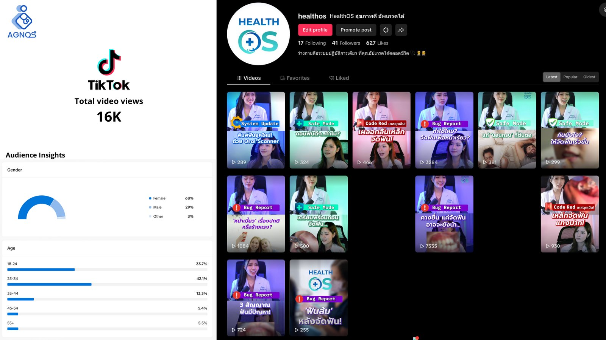
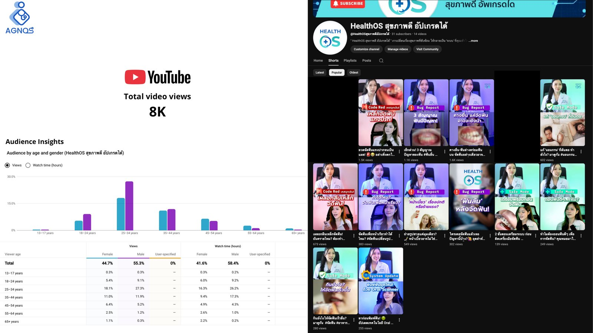
ช่อง TikTok และ YouTube Shorts ของแคมเปญ — 12 คลิปทั้งหมด แยกตามแพลตฟอร์ม
ดำเนินรายการสัมภาษณ์แพทย์เฉพาะทางเองหน้ากล้อง — ซีรีส์ HealthOS เปลี่ยนความรู้การแพทย์ให้เข้าถึงง่าย
03 Multi-touchpoint Patient Journey
ออกแบบ Touchpoints ที่พาผู้ป่วยจากคอนเทนต์วิดีโอสั้นไปสู่แหล่งข้อมูลเชิงลึก อย่างหน้าโปรไฟล์แพทย์และบทความ ก่อนตัดสินใจเข้ารับการรักษา
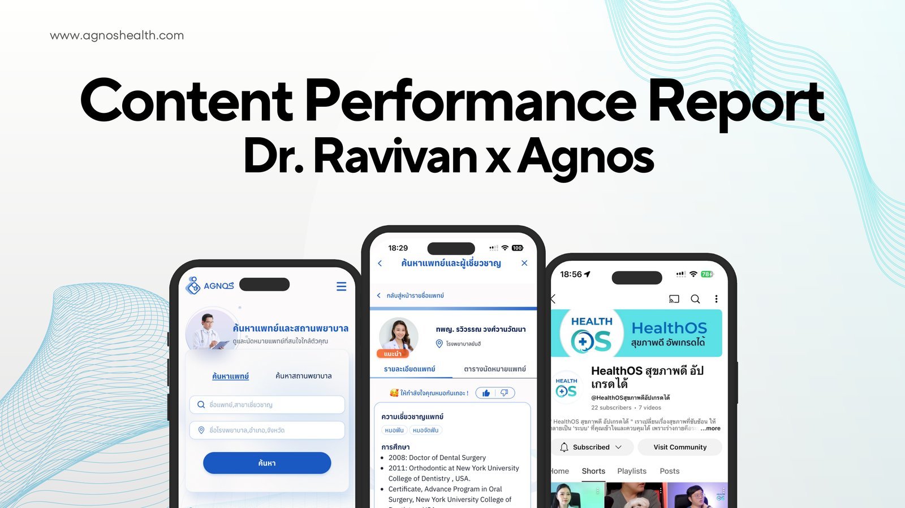
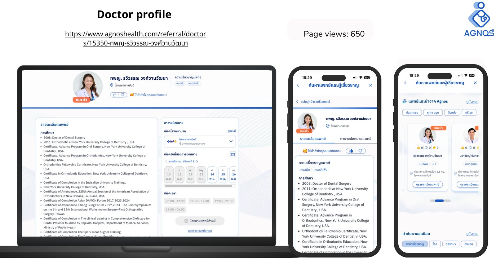
Touchpoint ที่วัดผลจริง — จากแอปค้นหาหมอ ไปจนถึงหน้าโปรไฟล์สำหรับนัดหมาย (650 page views)
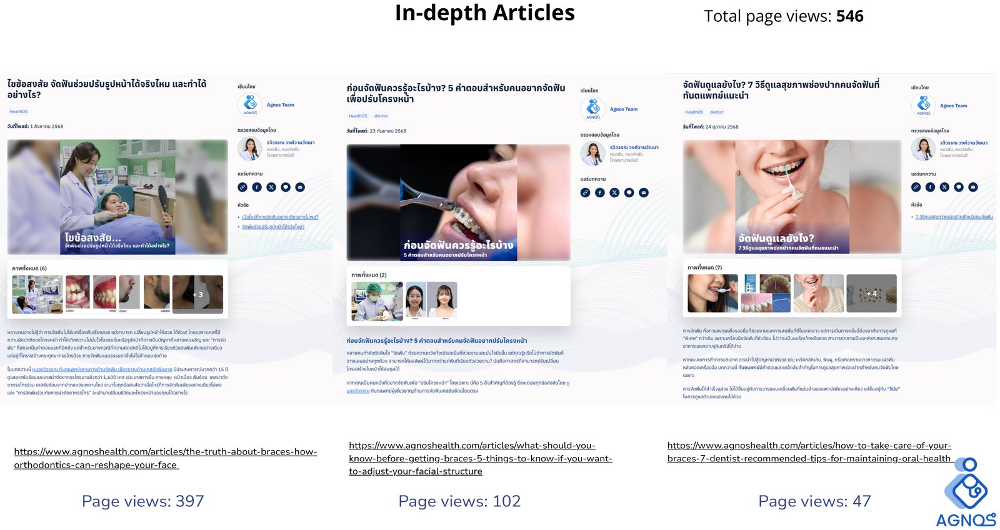
บทความเชิงลึก 3 ชิ้น รวม 546 page views
04 Performance Measurement
ออกแบบการวัดผลของแคมเปญในทุก Touchpoint ตั้งแต่ประสิทธิภาพของวิดีโอ การเข้าชมหน้าโปรไฟล์แพทย์ ไปจนถึงการอ่านบทความ เพื่อทำความเข้าใจพฤติกรรมของผู้ชมในแต่ละขั้นของ Customer Journey
คลิปที่ทำผลงานสูงสุด 5 อันดับ
5 คลิปจากทั้งหมด 12 ตอน เรียงตามยอดการมองเห็นและ engagement รวมทั้ง TikTok และ YouTube Shorts
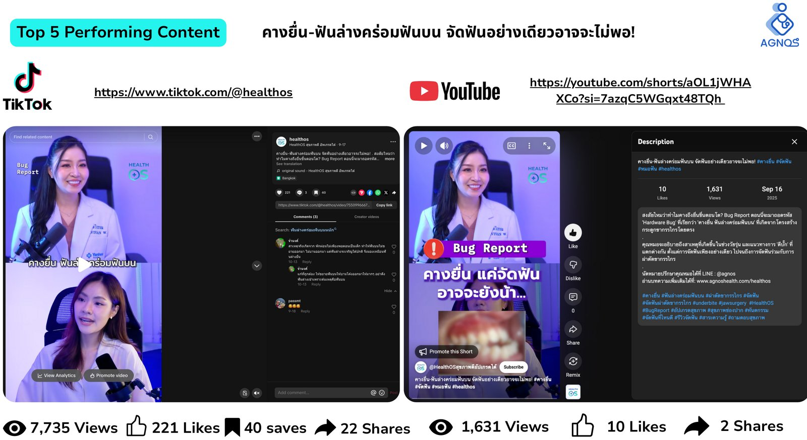
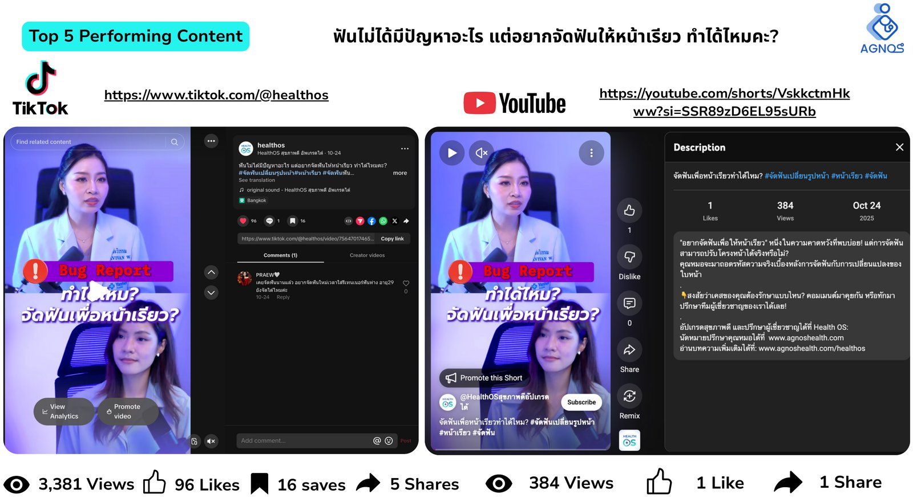
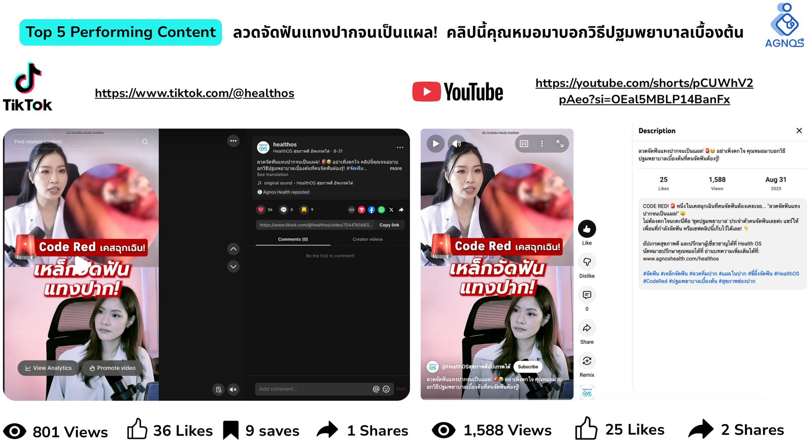
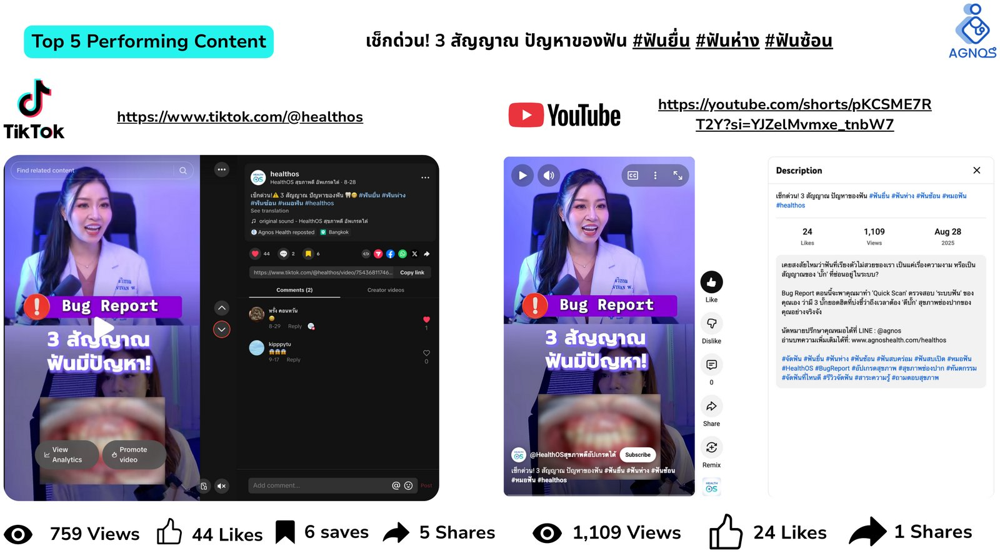
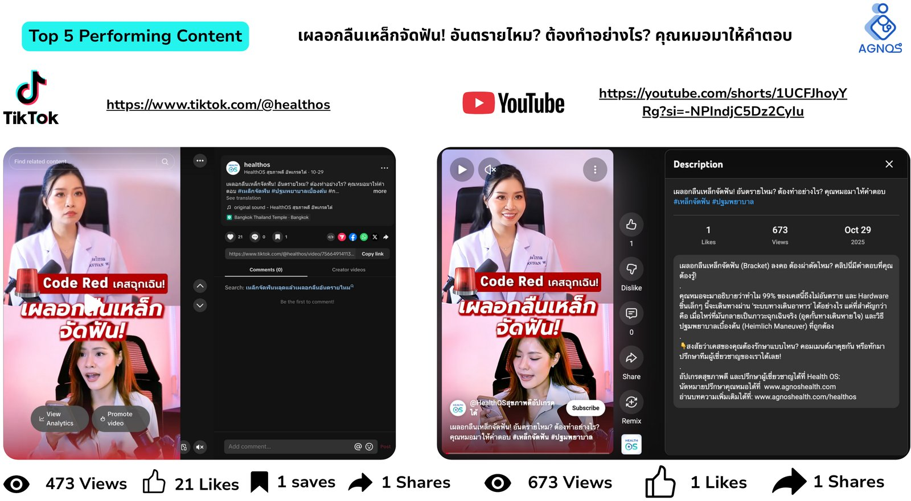
ประสิทธิภาพแคมเปญ
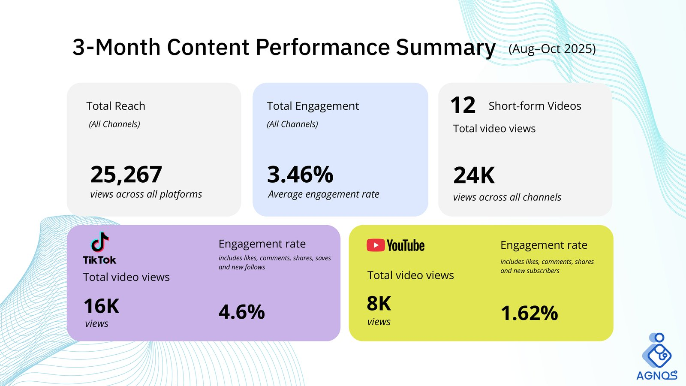
สรุปผลลัพธ์จากระบบจริง — ภาพหน้าจอจาก Content Performance Report ที่ส่งมอบให้ทีม
บทสรุปภาพรวม
โปรเจกต์นี้แสดงให้เห็นว่าคอนเทนต์เชิงให้ความรู้ช่วยเสริมสร้างความน่าเชื่อถือและตัวตนดิจิทัลของแพทย์เฉพาะทางได้อย่างไร โดยพาคนไข้จากการรับรู้เบื้องต้นไปสู่การพิจารณาอย่างลึกซึ้งขึ้น
แม้แคมเปญจะจบลงก่อนที่จะวัดข้อมูลการนัดหมายได้อย่างมีนัยสำคัญ แต่ก็สามารถพาผู้ชมก้าวข้ามคอนเทนต์วิดีโอสั้นๆ ไปสำรวจโปรไฟล์คุณหมอและแหล่งข้อมูลให้ความรู้ได้สำเร็จ
Other Work
Doctor Content Partnership
Building Specialist Credibility Through Educational Content
Agnos Health · Healthcare Content Marketing · Doctor Partnership
One of the doctor-interview clips — 1 of 12 educational videos produced to build the doctor's digital presence
RoleContent Strategy · Project Management · Scriptwriting · Video Production
Worked withA specialist orthodontist · Production team
PeriodAug – Oct 2025 (3 months)
Overview
Designed an educational content campaign to strengthen a specialist orthodontist's digital presence. Rather than
focusing on promotional messaging, the project answered patients' real questions through short-form videos,
educational articles, and the doctor's profile — guiding audiences from awareness to deeper consideration.
Role & Ownership
- Owned the project end to end — from content planning and scriptwriting to production, distribution, and performance measurement.
- Wrote scripts for 12 short-form videos across TikTok and YouTube Shorts, based on real patient concerns.
- Coordinated the specialist, hosted interviews, and managed filming and post-production across all 12 videos.
- Planned supporting educational articles and doctor profile content to extend the patient journey beyond short-form video.
What I Built & Executed
01 Educational Content Strategy
Designed the overall educational content strategy around real patient questions and concerns, defining key content themes, specialist messaging, and the customer journey from awareness to consideration.
02 Doctor-led Educational Content
Produced a 12-video educational series featuring a specialist orthodontist — leading topic planning, scriptwriting, interviewing, hosting, filming, and post-production.
The campaign's TikTok and YouTube Shorts channels — all 12 clips, split by platform
Hosting expert-interview clips on camera myself — the HealthOS series, making medical knowledge accessible
03 Multi-touchpoint Patient Journey
Built supporting touchpoints beyond short-form video — including the doctor's profile page and educational articles — guiding patients from short-form content to deeper educational resources before making treatment decisions.
The actual measured touchpoints — from the doctor-search app to the booking-ready profile page (650 page views)
3 in-depth articles, 546 page views combined
04 Performance Measurement
Established campaign measurement across every content touchpoint — tracking video performance, doctor profile visits, and article engagement to understand how audiences interacted with the specialist's educational content.
Top 5 Performing Clips
Five of the twelve educational videos, ranked by combined reach and engagement across TikTok and YouTube Shorts.
Campaign Performance
Straight from the system — a screenshot from the Content Performance Report delivered to the team
Outcome
The project demonstrated how educational content can strengthen a specialist's credibility and digital presence
by guiding patients from initial awareness to deeper consideration. Although the campaign ended before
meaningful booking data could be measured, it successfully encouraged audiences to move beyond short-form
videos and explore the doctor's profile and educational resources.